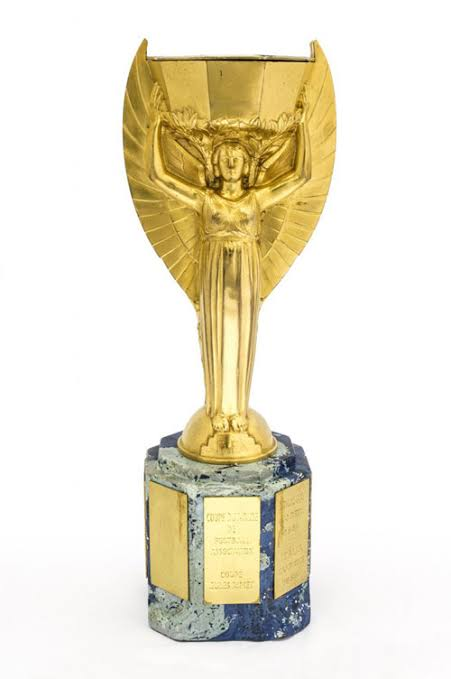
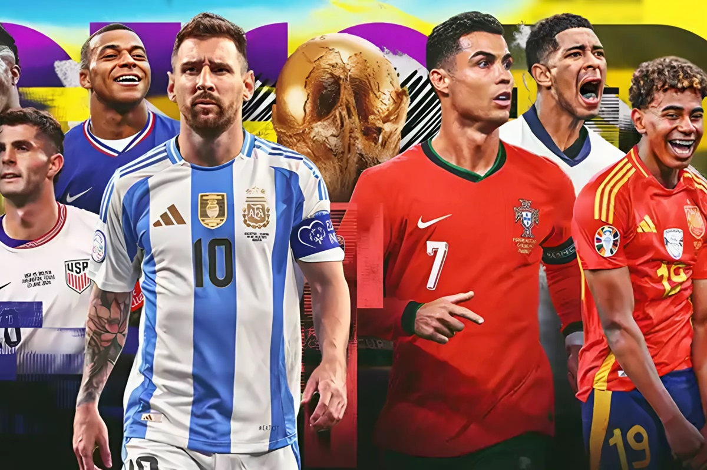

Historia de los Mundiales
Los Mundiales de Fútbol comenzaron en 1930 en Uruguay y desde entonces se realizan cada cuatro años. A lo largo de la historia, este torneo ha reunido a las mejores selecciones del mundo y ha dejado momentos inolvidables para los aficionados.

Primer Mundial
El primer Mundial de Fútbol se realizó en Uruguay. Participaron 13 selecciones y el país anfitrión se convirtió en el primer campeón del torneo al vencer a Argentina en la final. Este campeonato marcó el inicio de la competencia más importante del fútbol.

Evolución del torneo
Con el paso de los años, la Copa Mundial fue creciendo tanto en cantidad de equipos como en audiencia. Actualmente reúne a selecciones de todos los continentes y es seguido por millones de personas alrededor del mundo. El Mundial 2026 será el primero con 48 selecciones participantes.
